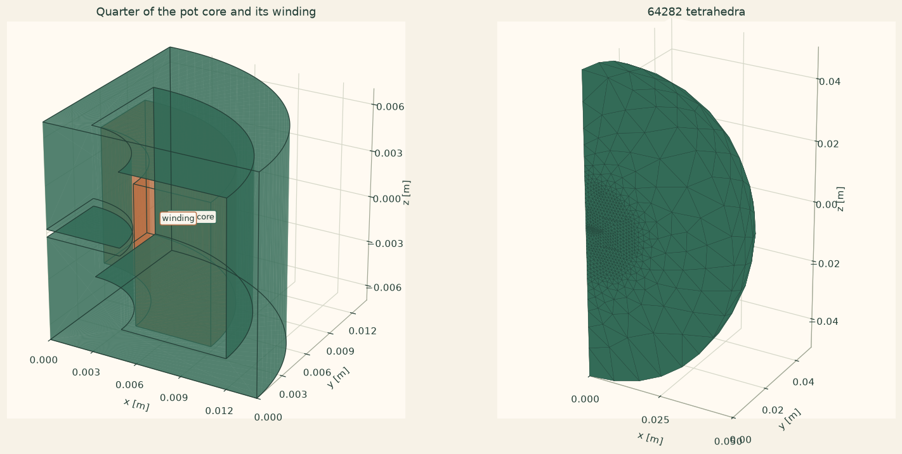

Docs › Examples › Inductance of a gapped power inductor with a saturating core
Magnetostatics · 3D
Inductance of a gapped power inductor with a saturating core
A 20-turn winding in a ferrite pot core with an air gap in its centre post: the inductance stays nearly constant at small currents and drops when the ferrite saturates.
Run locally with OneSimulation. The example downloads are free. Running them requires an activated runtime. Runtime Alpha 0.2.1a7 · CPython 3.13 on macOS (Apple Silicon), Ubuntu 22.04 (x86-64), and Windows x64. Installation and activation · View pilot plans. Scope of the reference checks.

What it computes
OneSimulation solves the nonlinear 3D vector-potential problem of the quarter inductor read from STEP with Newton's method on Nedelec edge elements; the winding is declared whole and clipped to the quarter by the mesher, the ferrite law is a plain Python function, and every Newton step is solved with GMRES and the auxiliary-space preconditioner for edge elements. Flux linkage and field energy of the whole inductor follow from the quarter. The script that builds the STEP files comes with the notebook.
What it checks
At 0.5 A the inductance from the flux linkage, 91.9 µH, equals the one from the field energy 2W/I^2 to 1e-5 and lies 1.1 % above the magnetic-circuit estimate with fringing (90.9 µH); at 16 A the saturated centre post (0.58 T) lowers the secant inductance to 60.5 µH and the differential inductance to 26.5 µH.
Geometry
The notebook starts at the import of the CAD files power_inductor_inductance.step, power_inductor_inductance_core.step, power_inductor_inductance_winding.step: STEP (AP242), readable by any CAD program, with the names of the faces that the boundary conditions use. Put them next to the notebook.

The geometry script
The script power_inductor_inductance_geometry.py builds the geometry with the CAD objects of OneSimulation and writes the files. Change a dimension there, run it, and run the notebook again.
"""Geometry of the OneSimulation example "Inductance of a gapped power inductor".
Builds one quarter of the air around a ferrite pot-core inductor with the CAD objects of
OneSimulation: a quarter of a ball of 50 mm radius, cut by the planes x = 0 and y = 0 (face group
planes; the ball surface is outer), written to power_inductor_inductance.step. The quarter of the
ferrite core (outer radius 14 mm, height 14 mm, winding window from 5 to 12 mm radius and 10 mm
high, 0.5 mm air gap in the centre post) goes to power_inductor_inductance_core.step, the quarter of
the winding (6 to 11 mm radius, 9 mm high) to power_inductor_inductance_winding.step.
"""
from onesim.cad.d3 import AnnularCylinder, Box, Cylinder, Sphere
mm = 1e-3
air = 50 * mm
quarter = Box(length=air, width=air, height=2 * air, origin=(0.0, 0.0, -air)).named(
"cut"
)
region = Sphere(radius=air).named("ball") & quarter
faces = region.boundaries
region.grouped(
planes=faces["cut.x_min"] | faces["cut.y_min"],
outer=region.select(faces=lambda face: face.id.startswith("ball")),
).save("power_inductor_inductance.step")
core = (
Cylinder(radius=14 * mm, length=14 * mm, origin=(0.0, 0.0, -7 * mm))
- AnnularCylinder(
inner_radius=5 * mm,
outer_radius=12 * mm,
length=10 * mm,
origin=(0.0, 0.0, -5 * mm),
)
- Cylinder(radius=5 * mm, length=0.5 * mm, origin=(0.0, 0.0, -0.25 * mm))
)
(core & quarter).save("power_inductor_inductance_core.step")
(
AnnularCylinder(
inner_radius=6 * mm,
outer_radius=11 * mm,
length=9 * mm,
origin=(0.0, 0.0, -4.5 * mm),
)
& quarter
).save("power_inductor_inductance_winding.step")The notebook
The complete notebook, cell by cell. Run it to produce the figures and the comparison printout.
Power inductors in switched-mode supplies store energy in a small air gap of a ferrite core. Here a pot core (outer radius 14 mm, height 14 mm, winding window from 5 to 12 mm radius and 10 mm high) has a gap of \(g=0.5\) mm in its centre post; a winding of \(N=20\) turns fills the window. The ferrite follows the saturating law
linear at low induction and saturating above about 0.4 T. The field solves \(\nabla\times\mathbf H(\nabla\times\mathbf A)=\mathbf J\) with the winding current density \(\mathbf J\); one quarter is computed, and the winding is cut by its two symmetry planes. The secant inductance is \(L=\Psi/I\) with the flux linkage \(\Psi=\frac1I\int\mathbf A\cdot\mathbf J\,dV\); at small currents it must equal \(2W/I^2\) with the field energy \(W=\frac12\int\mathbf H\cdot\mathbf B\,dV\).
The air, a quarter of a ball of 50 mm radius, comes from the CAD file power_inductor_inductance.step (face groups planes and outer), the core from power_inductor_inductance_core.step and the winding from power_inductor_inductance_winding.step; the script power_inductor_inductance_geometry.py builds them with the CAD objects of OneSimulation.
| face | condition |
|---|---|
planes (through the axis), outer | \(\mathbf n\times\mathbf A=0\) |
Reference. The magnetic circuit of a gapped core gives \(L=N^2/(\mathcal R_g+\mathcal R_c)\) with the gap reluctance \(\mathcal R_g=g/(\mu_0A_p)\) of the post area \(A_p\); the field fringing around the gap enlarges its effective area by the factor \(F=1+\frac{g}{\sqrt{A_p}}\ln\frac{2w}{g}\) with the window height \(w\) (McLyman, Transformer and Inductor Design Handbook, 4th ed., Ch. 8). Below saturation the computed inductance should lie close to \(F\,N^2/(\mathcal R_g+\mathcal R_c)\).
import numpy as np
from onesim.cad.d2 import Plane
from onesim.cad.d3 import AnnularCylinder
from onesim.cad.exchange import load
from onesim.materials import VacuumPermeability
from onesim.meshing import LocalRefinement, TetrahedralMesher
from onesim.numerics import Numerics
from onesim.numerics.fem import FiniteElement, Nedelec
from onesim.numerics.linear import GMRES, AuxiliarySpaceMaxwell
from onesim.numerics.nonlinear import DampedNewton
from onesim.physics.magnetostatics import (
AnisotropicMagneticEnergy,
CoulombGauge,
MagneticInsulation,
MagneticVectorPotential,
Magnetostatics,
SolenoidCurrent,
flux_linkage,
magnetic_energy,
region_mask,
)
from onesim.simulation import Problem, Simulation
from onesim.visualization import plots, theme
theme.set()Geometry and mesh
The core and the winding are embedded in the mesh, with 1 mm cells in the core, 0.4 mm in the gap and coarser cells in the air. The winding is declared whole (SolenoidCurrent with an annular support of the dimensions of the STEP winding); with clip_regions=True the mesher keeps its quarter inside the air region.
air, core = load("power_inductor_inductance.step"), load(
"power_inductor_inductance_core.step"
)
faces = air.boundaries
mm, turns, gap, post, window = 1e-3, 20, 0.5e-3, 5e-3, 10e-3
winding = load("power_inductor_inductance_winding.step")
coil = lambda current: SolenoidCurrent(
inner_radius=6 * mm,
outer_radius=11 * mm,
length=9 * mm,
turns=turns,
current=current,
source_id="winding",
support_factory=AnnularCylinder,
)
mesh = TetrahedralMesher(
target_size=0.01,
embedded_regions=(core, coil(1.0).support),
clip_regions=True,
refinements=(
LocalRefinement(region=core, target_size=1.0 * mm),
LocalRefinement(region=coil(1.0).support, target_size=1.5 * mm),
),
size_field=lambda points: np.clip(
np.minimum(
0.4 * mm
+ 0.6
* np.hypot(
np.maximum(np.hypot(points[:, 0], points[:, 1]) - post, 0), points[:, 2]
),
1.0 * mm + 0.6 * np.maximum(np.linalg.norm(points, axis=1) - 0.016, 0),
),
0.4 * mm,
0.01,
),
).generate(air)
view = plots.Camera(elevation=25, azimuth=-60)
fig = plots.figure(1, 2, size=(14, 6))
plots.geometry(
[core.named("ferrite core"), winding.named("winding")],
camera=view,
title="Quarter of the pot core and its winding",
ax=fig[0],
)
plots.mesh(
mesh,
groups=("all",),
legend=False,
camera=view,
title=f"{mesh.cell_count} tetrahedra",
ax=fig[1],
)
plots.show()Material law
One function returns the energy density, the field strength and its derivative for the ferrite inside the core and for the air outside; region_mask(core, points) decides by the cells of the mesh which quadrature points lie in the core.
mu0 = float(VacuumPermeability().evaluate())
linear, saturation = 1 / (mu0 * 2000.0), 5.4e5
def ferrite(induction, points, context):
"""Energy density, H and dH/dB of the law H = (k1 + k2 |B|^8) B in the core, of air elsewhere."""
inside = region_mask(core, points)
k1, k2 = np.where(inside, linear, 1 / mu0), np.where(inside, saturation, 0.0)
b = np.linalg.norm(induction, axis=1)
secant = k1 + k2 * b**8
tangent = (
secant[:, None, None] * np.eye(3)
+ (8 * k2 * b**6)[:, None, None] * induction[:, :, None] * induction[:, None, :]
)
return k1 * b**2 / 2 + k2 * b**10 / 10, secant[:, None] * induction, tangentModel
One nonlinear simulation per winding current, solved with Newton's method. Each Newton step is a linear edge-element system, solved with GMRES and the auxiliary-space preconditioner (AuxiliarySpaceMaxwell), whose multigrid hierarchy is kept from one Newton step to the next.
currents = (0.5, 4.0, 8.0, 12.0, 16.0)
models = [
Magnetostatics(
domain=air.volume,
permeability=VacuumPermeability(),
formulation=MagneticVectorPotential(gauge=CoulombGauge()),
current_sources=(coil(current),),
magnetic_response=AnisotropicMagneticEnergy(
lambda points, context: np.eye(3), ferrite
),
)
for current in currents
]
numerics = Numerics(
spatial=FiniteElement(element=Nedelec(order=1)),
nonlinear_solver=DampedNewton(
linear_solver=GMRES(preconditioner=AuxiliarySpaceMaxwell()),
relative_tolerance=1e-10,
absolute_tolerance=1e-12,
),
)
results = [
Simulation(
problem=Problem(
name="Pot-core inductor",
geometry=air,
physics=(model,),
boundary_conditions=(
MagneticInsulation(boundary=faces.planes | faces.outer, physics=model),
),
),
mesh=mesh,
numerics=numerics,
).solve_stationary()
for model in models
]Results
flux_linkage integrates \(\mathbf A\cdot\mathbf J/I\) over the winding and magnetic_energy the energy density; with copies=4 both give the values of the whole inductor from its quarter. The energy checks the linkage at the smallest current.
linkage = [
flux_linkage(result, model, model.current_sources[0], copies=4)
for model, result in zip(models, results)
]
inductance = [psi / current for psi, current in zip(linkage, currents)]
energy = magnetic_energy(results[0], models[0], copies=4)
area = np.pi * post**2
core_path = 2 * (window + 2 * mm) + 2 * (12.5 * mm)
circuit = turns**2 / (gap / (mu0 * area) + core_path / (mu0 * 2000.0 * area))
fringing = 1 + gap / np.sqrt(area) * np.log(2 * window / gap)
print(
f"at {currents[0]} A: L from the flux linkage {1e6 * inductance[0]:.3f} µH, from the energy 2W/I^2 {1e6 * 2 * energy / currents[0] ** 2:.3f} µH "
f"({100 * (2 * energy / currents[0] ** 2 / inductance[0] - 1):+.3f} %)"
)
print(
f"magnetic circuit {1e6 * circuit:.2f} µH, with fringing factor {fringing:.3f}: {1e6 * fringing * circuit:.2f} µH "
f"({100 * (inductance[0] / (fringing * circuit) - 1):+.1f} % from the simulation)"
)
differential = np.gradient(linkage, currents)
print(
"current [A] flux linkage [mWb] secant L [µH] differential L [µH] largest |B| in the centre post [T]"
)
post_line = np.column_stack(
(np.full(15, 1e-4), np.full(15, 1e-4), np.linspace(0.5 * mm, 6.5 * mm, 15))
)
for current, psi, value, slope, model, result in zip(
currents, linkage, inductance, differential, models, results
):
print(
f"{current:11.1f} {1e3 * psi:20.5f} {1e6 * value:15.3f} {1e6 * slope:21.3f} "
f"{np.linalg.norm(result.field(model.magnetic_flux_density).evaluate(post_line), axis=1).max():24.3f}"
)Figure
The induction through the axis at the highest current, where the centre post saturates, and the inductance against the current.
fig = plots.figure(1, 2, size=(16, 6))
plots.section(
results[-1].field(models[-1].magnetic_flux_density),
plane=Plane(origin=(0, 1e-6, 0), normal=(0, 1, 0)),
component=lambda B, p: np.linalg.norm(B, axis=1),
limits=(0, 0.6),
contours=13,
subdivisions=2,
symmetry={"planes": [((1, 0, 0), (0, 0, 0))]},
label="|B| [T]",
xlimits=(-0.018, 0.018),
ylimits=(-0.01, 0.01),
xlabel="x [m]",
ylabel="z [m]",
title=f"Induction at {currents[-1]:.0f} A",
ax=fig[0],
)
plots.line(
currents,
{
"secant L = Ψ/I": 1e6 * np.array(inductance),
"differential L = dΨ/dI": 1e6 * differential,
},
markers=True,
hlines={"magnetic circuit with fringing": 1e6 * fringing * circuit},
xlabel="winding current [A]",
ylabel="inductance [µH]",
title="Saturation of the inductor",
ax=fig[1],
)
plots.show()Going further
Widen the gap in power_inductor_inductance_geometry.py: the inductance falls and the saturation current rises, the classic trade-off of inductor design. Replace the polynomial by a measured B-H table, or add a second winding and compute the mutual inductance.